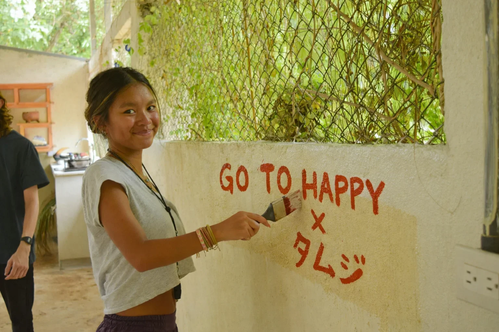
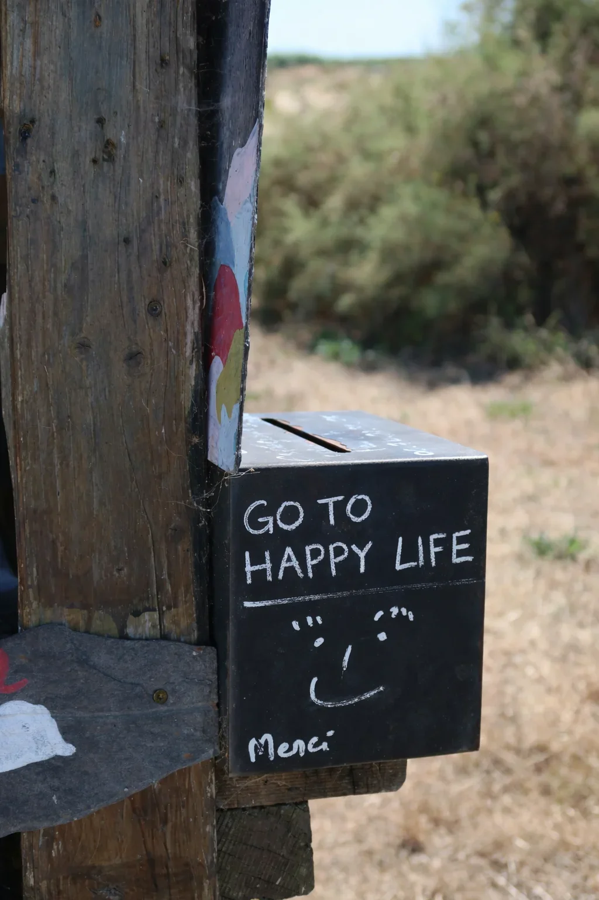
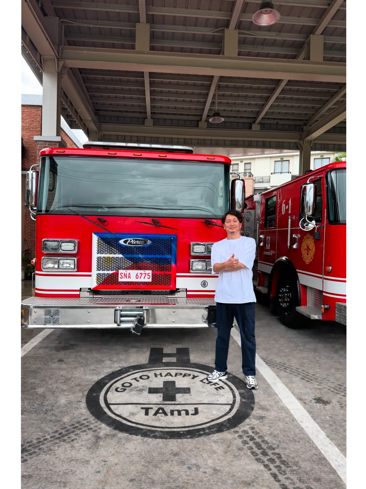

団体概要
- 名称
- 特定非営利活動法人 GO TO HAPPY LIFE
（旧名称：日本在宅看護普及会） - 役員
-
後藤 栄子（理事長）
後藤 基温（理事）
伊藤 晋（理事）
大下 甚（監事） - 設立
- 平成11年（1999年）9月
- 所在地
- 東京都
- 事業内容
- 医療と福祉を軸に、制度の外で困っている人のための活動
GO TO HAPPY LIFE は
NPOとして寄付を受け取り
社会課題の解決を推進します。
プロジェクトの企画・運営は
パートナー企業である
TAmJ株式会社が担当し
医療・福祉・地域企業などの
実行パートナーと連携して
事業を実装します。
問題提起
制度は、すべてを救わない。
医療保険、介護保険、生活保護。日本には多くの社会保障制度がある。
でも、その網の目からこぼれ落ちる人がいる。
私たちは、その現実を知っている。
支援観
支援とは、"してあげる"ことではない。
私たちは、現場に行く。話を聞く。一緒に考える。
答えを持っていくのではなく、答えを一緒に探す。
それが、私たちの支援観だ。
医療×福祉の空白
医療は病院で終わる。福祉は申請から始まる。
退院したけど、生活が戻らない。制度はあるけど、つながらない。
私たちは、その空白に立つ。

非効率の選択
効率を求めれば、現場には行けない。
私たちは、スケールしない支援を選んでいる。
一人ひとりに向き合う。時間をかける。遠くまで行く。
それは非効率だ。でも、それしかない。
1999年からの変化
設立から25年以上が経った。
社会は変わった。制度も変わった。
でも、制度の外で困っている人は、今もいる。
私たちは、変わらずそこにいる。
目指す位置
私たちは、万能ではない。
すべてを救えるとは思っていない。
でも、目の前の一人を見捨てない。
それが、私たちの立つ位置だ。
私たちの役割
私たちは
すべてを自分たちで行う団体ではありません。
社会課題の解決には
公益・事業・現場
それぞれの役割が必要です。
GO TO HAPPY LIFE は
その中心で
プロジェクトを推進するNPO法人です。
活動ギャラリー
これは活動記録ではない。
私たちが、逃げなかった証拠だ。

想いを、国境を越えて届ける。
現地のコミュニティとつながりながら、支援のきっかけを一つひとつ積み重ねています。

命を守る現場と、つながる。
医療や防災の現場とも連携し、支援の幅を広げています。

支援は、特別なことじゃない。
集まり、話し、行動する。その一歩が社会を動かします。

想いは、静かに根づいていく。
目立たなくても、支援は確かに続いています。
その「あいだ」に、誰にも届かない時間がある。